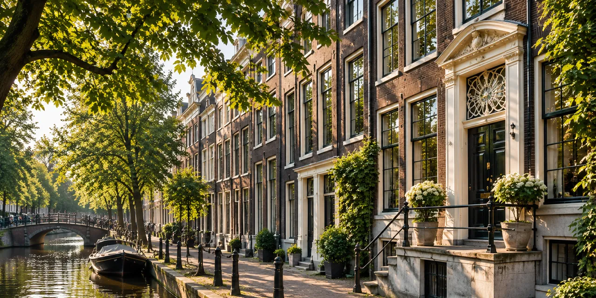
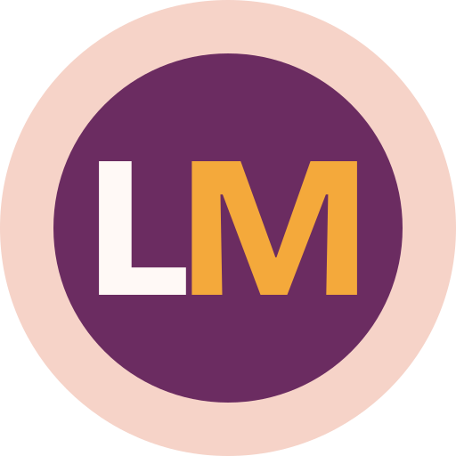

Vastgoed · Technologie · Governance
Bureau Gerritsma is een kennis-, advies- en innovatiebureau. Vanuit drie expertises helpen we organisaties vooruit en ontwikkelen we zelf nieuwe ondernemingen en oplossingen.
Strategie, technologie en transformatie in vastgoed. Van vastgoedorganisaties vernieuwen tot processen digitaliseren en nieuwe proposities ontwikkelen.
Technologie en AI die werken in de praktijk. Met de AI-ontwikkelstraat: een toepassing van de Paraaf-methodiek voor gecontroleerde AI-gedreven softwareontwikkeling.
Governance die werkt. Met PARAAF, onze eigen methodiek: wie is waarvoor verantwoordelijk, welke controles zijn nodig en hoe wordt kwaliteit geborgd.
Bureau Gerritsma combineert strategisch advies met leiderschap en realisatie. Afhankelijk van de opgave werken we als adviseur, interim-leider of transformatiepartner.
Richting bepalen en keuzes onderbouwen.
Tijdelijk leiderschap en verantwoordelijkheid.
Strategie vertalen naar verandering en resultaat.
Mensen, processen en technologie verbinden.
Eigen methodiek
PARAAF
Governance die werkt.
Strak proces. Slimme AI. Elke stap gecheckt.
Paraaf is de governance-methodiek van Bureau Gerritsma. Een gestructureerde aanpak om technologie, AI en bedrijfsprocessen verantwoord te ontwikkelen, te organiseren en te beheersen.
Ventures & Innovatie
Onze ervaring komt niet alleen uit adviesopdrachten. We ontwikkelen ook zelf ondernemingen en digitale concepten.

Technologie en matching LegendMatch Matching tussen professionals en werkgevers, via de eigen AI-assistent. Meer lezenBenieuwd wat Bureau Gerritsma voor uw organisatie kan betekenen? Neem contact op.
Plan een gesprek